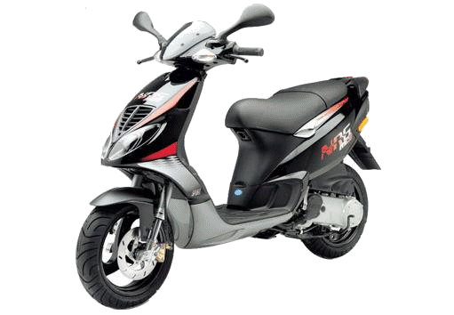

PIAGGIO FUN CLUB
Samo za ljubitelje Piaggio grupacije
 Ponešto o nama
Ponešto o nama
Poštovani vlasnici vaših ljubimaca, majstori i posjetioci portala,
Predstavljamo Vam web portal koji svim potencijalnim korisnicima, mehaničarima, servisima i svim pravnim i privatnim subjektima iz auto-moto sektora omogućava predstavljanje važnih uputstava, a samim time pruža jednostavan pristup lokacijama i podacima o održavanju pojedinih modela iz Piaggio/Gilera grupacije. Glavna karakteristika ovog web portala je velika količina informacija i tehničkih uputstava od strane proizvođača.
Ovaj portal je prilagođen svim uređajima koji su danas aktuelni, računari, laptopi, tableti, smartphoni i sl.
U kasnijim verzijama portala će biti omogućeno preporučena registracija na portal kako bi na vrijeme bili obavješteni o akcijama ili čak besplatnim promotivnim uslugama koje ovaj portal nudi.
Predstavljanje na portalu ima cilj da vozačima i ljubiteljima skutera omogućiti brz i jednostavan način pronalaska kvalitetne usluge koju pružaju pojedini moto-servisi i ostali poslovni subjekti iz tog sektora.
Ako trebate pomoć pri pronalasku odgovarajućeg materijala, vaše radionice, trgovine ili usluge naš tim Vam stoji na raspolaganju.
Možete nam se obratiti putem kontakt forme ili maila, vibera i telefona koji su navedeni ispod.
Biće nam zadovoljstvo odgovoriti na bilo koji vaš upit, sugestiju, primjedbu.
